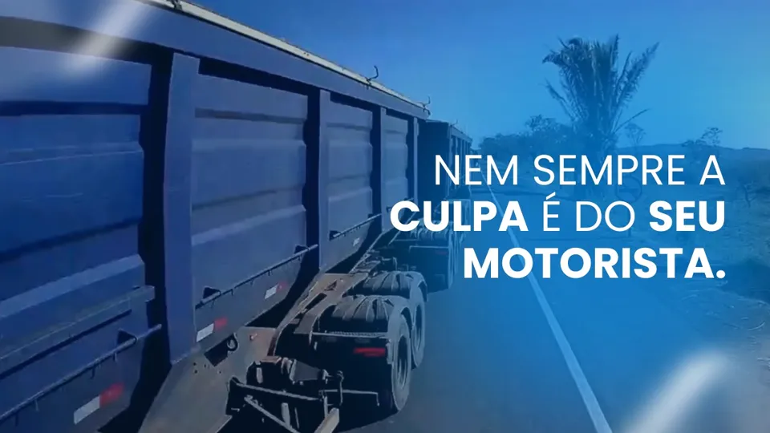
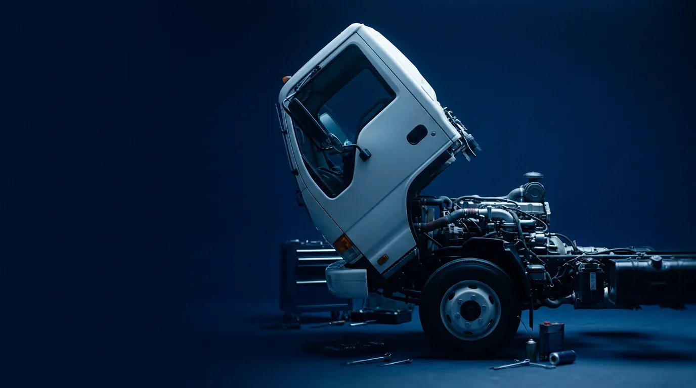
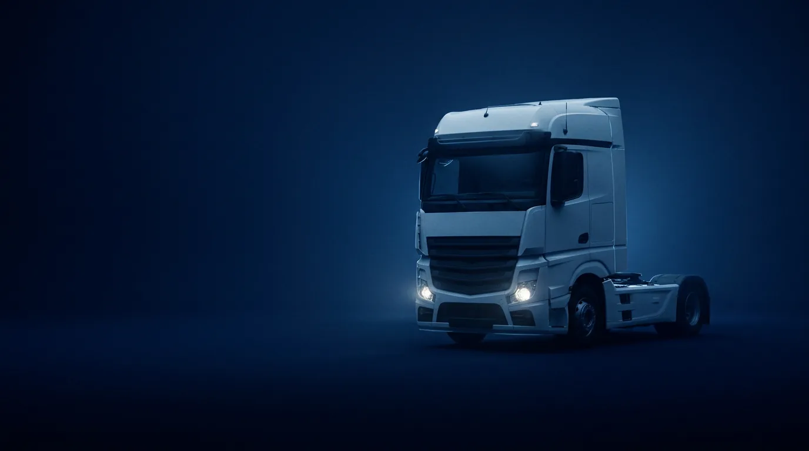
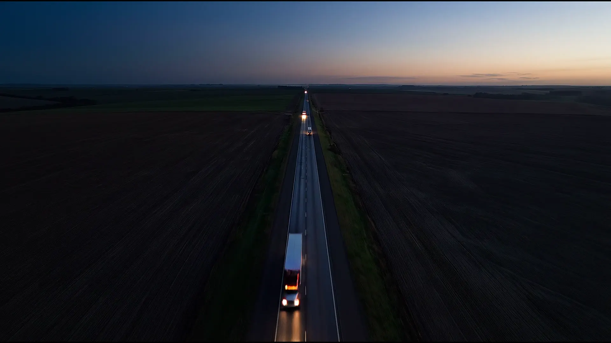
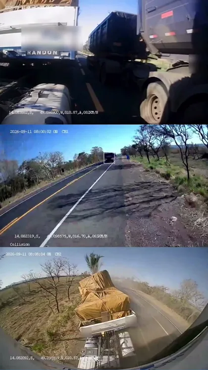
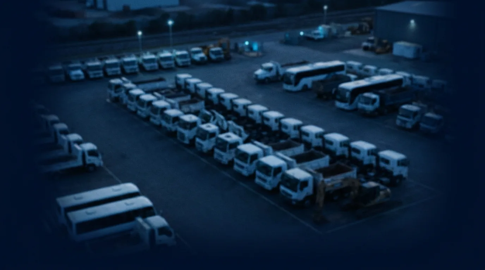
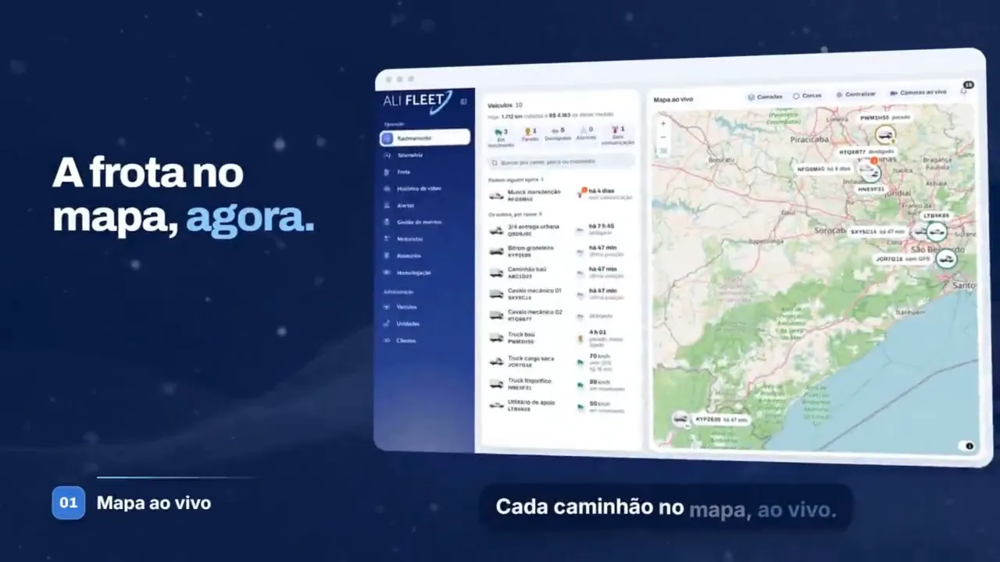
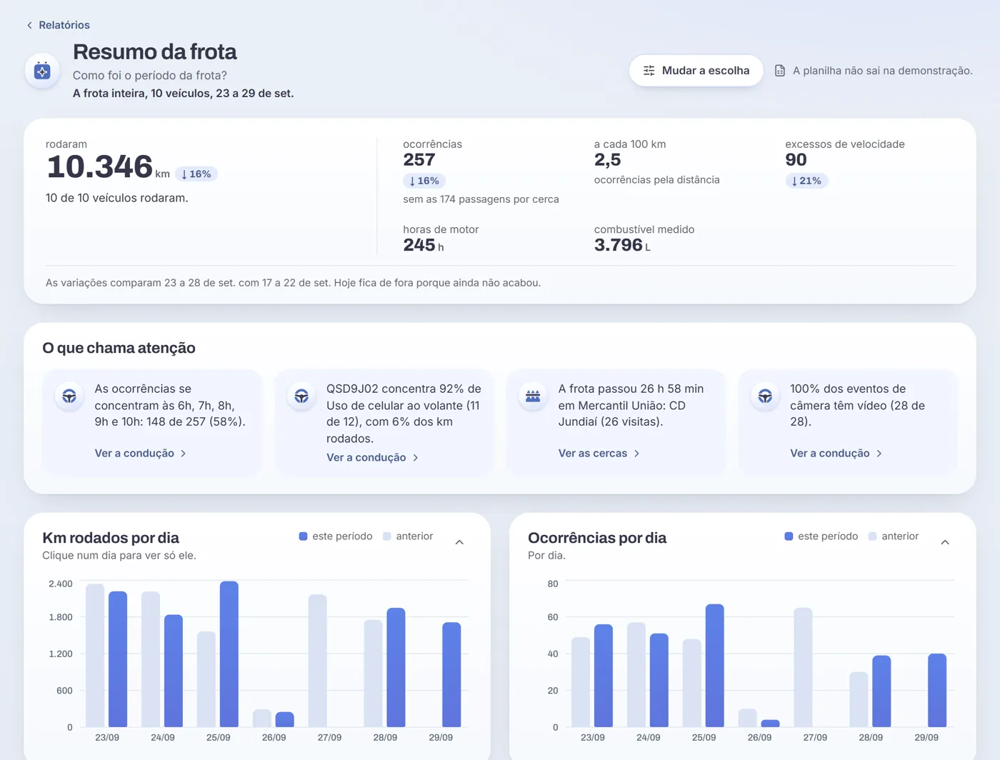
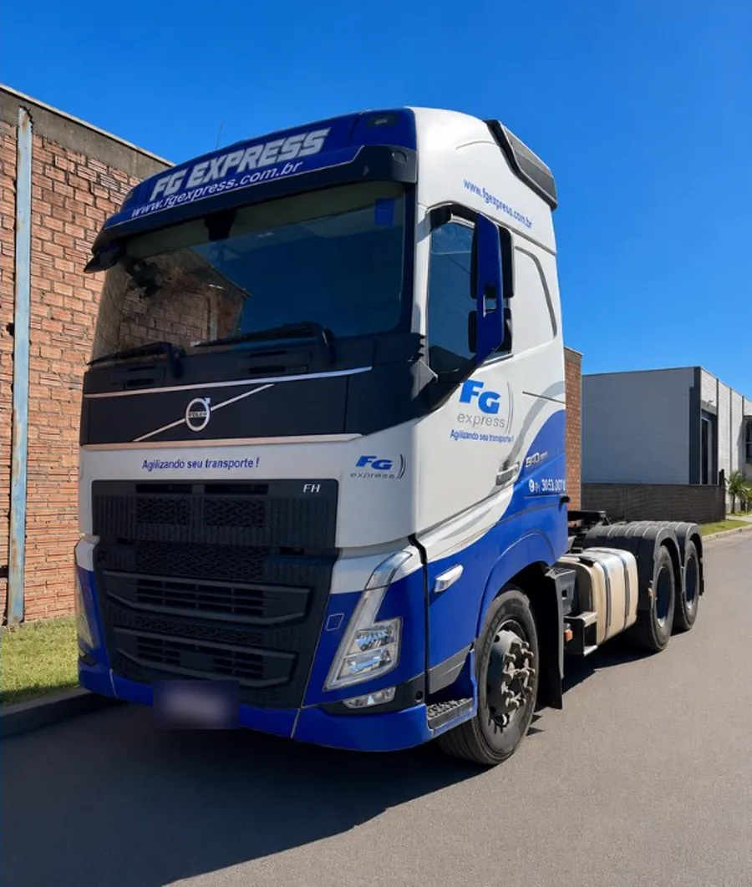

50% menos tempo analisando relatórios
Diesel, câmera, motorista e custo na mesma tela.
Veja o que acontece num dia da sua frota.
Ver o Alifleet com a minha frotaNem sempre a culpa é do seu motorista
Um bitrem ultrapassava quando surgiu um caminhão no sentido contrário. O outro veículo desviou e atingiu o caminhão do nosso cliente, que seguia na faixa dele. A câmera da Ali Sat registrou tudo.
Sem imagem, vira a palavra de um contra a do outro. Com o vídeo, a empresa tem o que mostrar.

Empresas que usam a Ali Sat
Terça, 02:40
O tanque baixou com o caminhão parado
Ninguém estava olhando. O nível caiu, o alerta entrou na tela e os litros ficaram registrados, com a hora e o lugar.
62% no tanque
00:0001:0002:0003:00
Queda com o veículo paradoO nível caiu 9%. Cerca de 0 L.
Medido

Checklist de hoje, ABC1D23. Toque para responder.
Pneus: OK
Luzes: OK
Freios: Não OK
Aberta
Agendada
Troca de óleoQSD9J02
Em execução
PneusLTB4K66
Terça, 06:10
O motorista marcou "Não OK" antes de sair
O checklist vai por link no WhatsApp. O item com problema vira ordem de serviço com um clique, antes de virar quebra na estrada.

Terça, 09:30
O cliente ligou perguntando da entrega
Todos os caminhões num mapa só, cada um com o estado ao lado. Você responde antes de desligar, sem ligar para o motorista.
Ver o Alifleet com a minha frota
3 em movimento
1 parado
ABC1D23, caminhão baú
Em movimento, 34 km da entrega
78 km/h
Dados de exemplo

Colisão frontal iminenteSXY5C14, às 14h20
Alta
- Alerta na telaNa hora em que acontece
- Vídeo do momentoO trecho de antes e de depois chega sozinho
- Quem dirigia e ondeCom a velocidade daquele instante
- A ocorrência fica guardadaO trecho baixa em arquivo
Terça, 14:20
O alerta chegou com o vídeo do momento
Antes de ligar para o motorista, você já sabe o que aconteceu e quem dirigia. Em acidente, o vídeo é o que separa a versão de cada um.
Ver o Alifleet com a minha frota
Terça, 18:00
O dia fechou e os pontos foram para o lugar certo
A conta é por 100 km, então quem roda mais não sai perdendo. A tela mostra quem evoluiu e quem precisa de apoio, com o motivo de cada ponto.
Carlos é quem mais precisa de apoio: 14,6 pontos perdidos a cada 100 km.
Dados de exemplo
0km rodados16% menos
0ocorrências18% menos
0litros medidos
Segunda, 08:00
O dono quis saber como foi a semana
Ele pergunta em português e a resposta vem com número e gráfico, sem abrir planilha e sem esperar relatório.
Ver o Alifleet com a minha frotaO painel de verdade, em 40 segundos

O que chega ao dono
Três respostas para quem assina a conta: quanto custou, quanto risco correu e o que tem para mostrar quando algo dá errado.
- Custo
- Manutenção e combustível somados, comparados com o período anterior.
- Risco
- Ocorrências por motorista e por veículo, cada uma com o vídeo.
- Prova
- O trecho do acidente em arquivo, para quando a empresa precisar mostrar o que aconteceu.

Quanto custa 1% a mais de consumo na sua frota
Coloque os números da sua operação. A conta é sua: não é promessa de economia.
Cada 1% de consumo a mais custa
R$ 0
por mês
R$ 0 por ano, em 0 L de diesel
Ver o Alifleet com a minha frota

No começo os motoristas resistiram. Hoje eles pedem as imagens.
“Hoje a gente enxerga o que tá acontecendo lá em tempo real.”
“Não compromete a privacidade do motorista.”
Alexandre Antunes Supervisão e gestão de motoristas, FG Express
Como funciona a implantação em frotas grandes
Cada projeto é construído conforme a operação do cliente. Logo após a contratação, vendedor, cliente e o CS responsável pela conta fazem a reunião de onboarding para alinhar necessidades, escopo, cronograma e próximos passos.
Planejar o projeto da minha frota- Prazo
- Planejado conforme o tamanho da frota, as unidades e a disponibilidade dos veículos.
- Acompanhamento
- Sua empresa tem um CS responsável pela conta, a equipe de implantação e o suporte técnico para configurar, orientar os usuários e acompanhar o uso.
- Integrações
- Avaliadas conforme os sistemas usados e as necessidades do projeto.
- LGPD
- O planejamento define acessos, finalidade e retenção dos dados, e orienta os motoristas sobre o uso de imagens e informações.